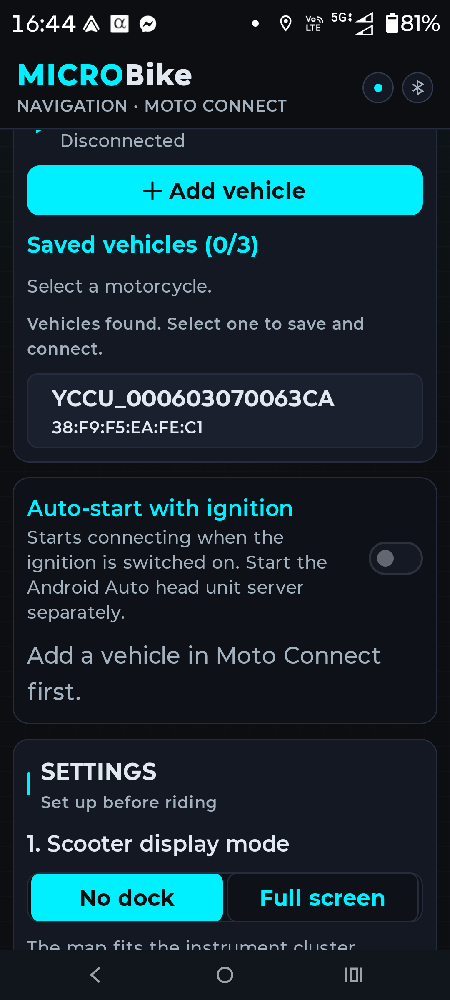
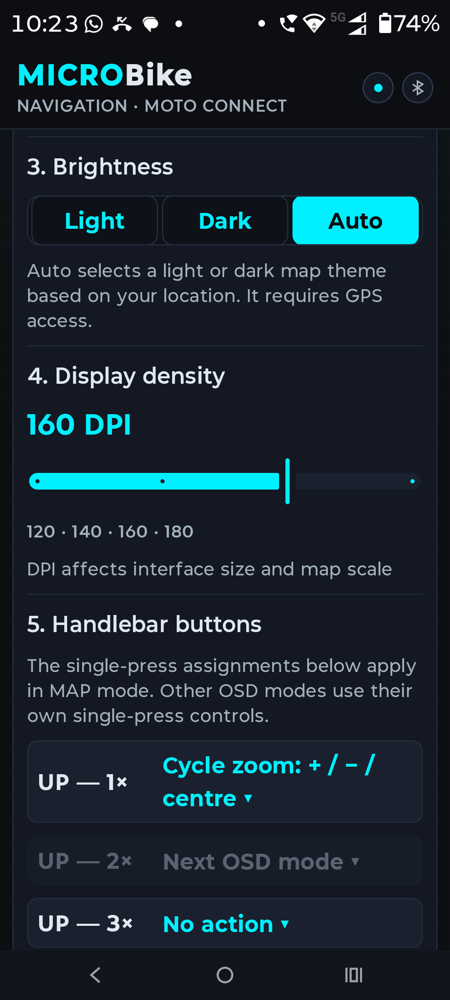

Parte 1 · Inicio rápido
1. Requisitos, primer inicio y permisos
Antes de empezar necesitas:
- Un teléfono con Android 12 o superior (API 31+).
- Android Auto instalado y habilitado (viene preinstalado en la mayoría de los teléfonos actuales).
- La app MICROBike instalada.
- Yamaha NMAX 125 Tech Max (2025/2026) con módulo YCCU / Garmin CCU. También puedes probar la vista previa de Android Auto en casa sin scooter ni Bluetooth.
Seguridad ante todo: realiza la configuración, el emparejamiento Bluetooth y la calibración del punto de centrado siempre en parado.
Idioma de la app: actualmente la interfaz de MICROBike está en inglés y polaco (se añadirán más idiomas más adelante). Por eso en esta guía incluimos los nombres de botones en español junto con el texto en inglés entre paréntesis.
- Acepta la pantalla de bienvenida. En el primer inicio revisa los avisos de seguridad (Important information before riding) y pulsa I understand and accept.
- Sigue el asistente de permisos (App permissions). Puedes conceder cada permiso ahora o pulsar Skip para cambiarlo más tarde:
- Dispositivos cercanos (Nearby devices) para el cuadro — necesario para buscar y conectar el módulo YCCU y medir el voltaje de la batería.
- Ubicación precisa (GPS) (Precise location) recomendado — activa la velocidad GPS para Android Auto, estadísticas de viaje, tema día/noche automático y el modo MENU en parado.
- Notificaciones de MICROBike Android 13+ — muestra las notificaciones persistentes de Bluetooth y GPS con botón rápido de parada.
- Estado del teléfono (Phone state) y Acceso a notificaciones (OSD) opcionales — muestran el nombre de quien llama, la duración de la llamada y el título de la canción en el TFT.
- Mostrar sobre otras aplicaciones (Display over other apps) opcional — permite iniciar rutas desde el menú del cuadro (Casa, Trabajo, Favoritos) cuando MICROBike está en segundo plano.

images/01-ekran-powitalny.png
Pantalla inicial con avisos de seguridad y botón de aceptación.

images/02-uprawnienia-kreator.png
Asistente “App permissions” (paso 1 de 6 — Nearby devices).
2. Activar el servidor de desarrollador de Android Auto
MICROBike recibe el vídeo directamente del servidor local integrado en Android Auto en tu propio teléfono. El modo desarrollador solo se activa una vez; el servidor de unidad principal debe iniciarse antes de circular si se detuvo o si reiniciaste el teléfono.
- Abre los ajustes de Android Auto desde MICROBike. En la tarjeta superior NAVIGATION STREAM pulsa SET. Si Android Auto no está instalado, pulsa primero Open Google Play.
- Desbloquea el modo desarrollador (solo la primera vez). Desplázate hasta el final de los ajustes de Android Auto y pulsa 10 veces sobre «Versión» (Version).
- Confirma el aviso. Cuando aparezca «¿Permitir ajustes de desarrollo?», pulsa Aceptar / OK.
- Inicia el servidor de unidad principal. Abre el menú ⋮ en la esquina superior derecha y selecciona Iniciar servidor de unidad principal (Start head unit server). Verás una notificación indicando que el servidor está en marcha.
- Vuelve a MICROBike. La app detecta el servidor y conecta automáticamente (el indicador superior se vuelve cian y aparece la vista previa del mapa). Si detuviste la proyección manualmente, pulsa START.

images/03-aa-przycisk-set.png
Tarjeta “NAVIGATION STREAM” con la guía rápida y el botón SET.

images/04-aa-ustawienia-wersja.png
Final de los ajustes de Android Auto destacando “Versión / Version” (pulsar 10 veces).

images/05-aa-tryb-programisty.png
Cuadro de diálogo de Android Auto para permitir los ajustes de desarrollo (OK).

images/06-aa-uruchom-serwer.png
Menú ⋮ arriba a la derecha destacando “Iniciar servidor de unidad principal / Start head unit server”.

images/07-aa-podglad-live.png
De vuelta en MICROBike: mapa de Android Auto visible en directo.
Dato útil: el servidor de Android Auto funciona exclusivamente de forma local dentro del teléfono (127.0.0.1) y no necesita cable USB.
Documentación oficial de Google sobre el servidor de unidad principal de Android Auto
3. Emparejar y conectar el cuadro Yamaha
- Empareja el scooter en Android. Pon el contacto del scooter y activa el Bluetooth del teléfono. En los ajustes Bluetooth de Android empareja el módulo cuyo nombre empieza por YCCU.
- Cierra otras apps del cuadro. Cierra StreetCross (y Yamaha MyRide si usas la lectura de batería), ya que el cuadro solo admite una conexión de navegación a la vez.
- Añade tu vehículo en MICROBike. En la tarjeta MOTO CONNECT pulsa + Add vehicle. La búsqueda de dispositivos YCCU dura hasta 15 segundos.
- Elige el YCCU detectado. El vehículo queda guardado (hasta 3 vehículos) y MICROBike se conecta al instante.
- Comprueba la pantalla TFT. Tras autenticar, el cuadro muestra la pantalla de espera de MICROBike y pasa a la navegación en cuanto Android Auto envía el primer fotograma.

images/08-bluetooth-parowanie-yccu.png
Ajustes Bluetooth de Android con el dispositivo “YCCU...” emparejado.

images/09-moto-connect-polaczono.png
Tarjeta “MOTO CONNECT” con vehículo guardado y estado “Connected”.
¡Listo para rodar! Antes de tu primer trayecto elige tu app de mapas dentro de la vista previa de Android Auto (Google Maps, Waze, etc.), comprueba el botón CENTRE y, si quieres, activa Auto-start with ignition.
Parte 2 · Descripción detallada de cada función
Flujo de navegación y calibración táctil
La tarjeta NAVIGATION STREAM (LIVE PREVIEW · 1280 × 720) muestra la interfaz completa de Android Auto con control táctil. En la barra superior hay dos testigos: el punto muestra el estado de Android Auto y el icono Bluetooth el del cuadro Yamaha (cian = conectado, ámbar = conectando/reintentando, rojo = error, gris = desconectado).
Botones bajo la vista previa
- Pantalla completa
- Amplía la vista interactiva de Android Auto a pantalla completa (admite giro de pantalla sin cortar la sesión). Sal con Close full-screen view.
- ↑ y ↓
- Botones virtuales del manillar con los mismos gestos (1×, 2×, 3×) y modos OSD que las flechas físicas del scooter.
- BACK
- Envía Atrás y seguidamente toca el punto guardado CENTRE para volver a centrar el mapa.
- MAP
- Devuelve inmediatamente la app de navegación al frente en Android Auto.
- Micrófono
- Activa el asistente de voz de Android Auto.
- CENTRE
- Pulsa las coordenadas guardadas del botón de centrado/brújula en el mapa.
- Set the map centre point
- Inicia la calibración: púlsalo y luego toca el icono de brújula/centrar dentro de la vista previa activa. Conviene recalibrar tras cambiar de app de mapas o de DPI.
- START / STOP / SET
- START reconecta con Android Auto, STOP detiene manualmente la proyección y SET abre los ajustes de Android Auto. Si una sesión activa se corta, MICROBike intenta recuperarla hasta 3 veces automáticamente (STOP cancela la recuperación).

images/10-kalibracja-wysrodkuj.png
Tarjeta “NAVIGATION STREAM” con la fila de botones y “Set the map centre point”.
Vista previa del cuadro y qué aparece en el TFT
La tarjeta INSTRUMENT CLUSTER PREVIEW refleja exactamente el fotograma enviado a la pantalla TFT de tu Yamaha NMAX. Toca la imagen para verla a pantalla completa.
- Pantalla de espera MICROBike
- Cuando el cuadro está autenticado pero Android Auto aún no envía imagen (o está detenido), el TFT muestra la pantalla de espera de MICROBike con el estado actual hasta que llega el primer fotograma del mapa.
- Barra lateral de telemetría (energía)
- En el margen izquierdo, encima y debajo de las flechas originales del cuadro:
- Arriba — voltaje de la batería del scooter, p. ej.
14.1V(o--.-Vblanco sin lectura reciente). - Abajo — batería del teléfono, p. ej.
82%(verde en nivel normal; rayo amarillo a la izquierda mientras carga;--%blanco si no hay datos). - Por debajo del umbral configurado cambia de color y, en alerta crítica, parpadea en rojo cada 0,5 s (ver Batería y alertas).
- Arriba — voltaje de la batería del scooter, p. ej.
- Tarjeta OSD contextual (esquina superior derecha)
- En los modos MEDIA, MENU y CALL muestra qué hace ahora cada flecha (↑ / ↓). En llamada activa indica también el estado real del micrófono de Android: MIC cian (activo), micrófono tachado en rojo (silenciado) o MIC ? gris (desconocido). Las acciones individuales en mapa muestran un aviso de confirmación durante 2 segundos.
- Barra inferior de estado del cuadro
- Sustituye el texto inferior original por telemetría contextual:
- Modos MAP y MENU: tiempo de conducción (
Time:a >2 km/h) y velocidad media (Avg:). Vacía si el GPS del teléfono está desactivado. - Modo MEDIA: estado
[PLAY]/[PAUSE]y título de la canción (requiere Acceso a notificaciones). - Modo CALL: nombre o número del contacto y duración de la llamada, o aviso de llamada entrante.
- Aviso de fallo de carga (máxima prioridad): con GPS >30 km/h y batería <13,8 V aparece
! NOT CHARGING.junto al voltaje.
- Modos MAP y MENU: tiempo de conducción (

images/11-podglad-licznika-tft.png
Vista previa TFT Yamaha NMAX con mapa, barra lateral de voltaje/batería, tarjeta OSD y barra inferior.
Control desde el manillar y modos OSD
Los botones físicos ↑ y ↓ del manillar (y las flechas virtuales de la app) detectan pulsaciones simples, dobles y triples en una ventana de 650 ms, con cuatro modos contextuales.
| Modo OSD | ↑ (1×) | ↓ (1×) | Retorno automático |
|---|---|---|---|
| MAP (predeterminado) | Por defecto: Ciclo de zoom (+ / − / centrar)* | Por defecto: Back + centrar* | Modo base |
| MEDIA | Siguiente pista | Reproducir / Pausa | Tras 20 s sin uso → MAP |
| MENU (Inicio AA) | Siguiente elemento (rotary +1) | Seleccionar (SELECT) | Tras 60 s o al iniciar la marcha → MAP |
| CALL (entrante) | Responder llamada | Rechazar llamada | Al finalizar → MAP |
| CALL (en curso) | Silenciar / activar micrófono | Colgar | Al colgar → MAP |
* Las pulsaciones simples (↑ 1× y ↓ 1×) en modo MAP se pueden personalizar en ajustes.
Gestos globales (funcionan en cualquier modo)
- ↑ dos veces (2×)
- Cambia de modo OSD en bucle: MAP → MEDIA → MENU → CALL (CALL solo aparece durante una llamada).
- ↓ dos veces (2×)
- Abre el asistente de voz (Voice) de Android Auto.
- ↑ o ↓ tres veces (3×)
- Desactivados por defecto (No action). Puedes asignarles acciones globales en ajustes; asignar una acción a 3× añade una espera de 650 ms al gesto 2× correspondiente.
Detalles clave
- Ciclo de zoom (+ / − / centrar): alterna acercar, alejar y atrás + centrar (se reinicia tras 10 s de pausa).
- Modo MENU (solo en parado): por seguridad solo funciona con GPS del teléfono activo y 0 km/h confirmados. Al entrar abre el inicio de Android Auto; al ponerte en marcha, perder el GPS o desactivarlo vuelve automáticamente al mapa.
- Personalización (5. Handlebar buttons): permite reasignar 1× en MAP y los 3× globales, con botón Restore default buttons.

images/12-przyciski-kierownicy.png
Sección “5. Handlebar buttons” con asignaciones UP/DOWN 1×, 2×, 3×.
Moto Connect y Arranque automático con el contacto
Moto Connect (vehículos guardados)
- Guarda hasta 3 módulos YCCU y reconéctate con un toque.
- El botón X elimina el vehículo de MICROBike manteniendo el emparejamiento Bluetooth en Android.
- Disconnect cierra la sesión actual (y desactiva el Arranque automático si estaba activo).
Arranque automático con el contacto (Auto-start with ignition)
- Desactivado por defecto: elige un vehículo guardado y activa el interruptor.
- Cómo funciona: un servicio Bluetooth en segundo plano con notificación reintenta cada ~30 s (máx. 8 s por intento); los eventos Bluetooth aceleran el siguiente intento.
- Tras reiniciar el teléfono: se reanuda automáticamente tras el primer desbloqueo (según las reglas de batería del sistema). Si se detuvo, usa Resume standby.
- Requisito en segundo plano: el servidor de unidad principal de Android Auto ya debe estar en ejecución. La proyección arranca tras autenticar el YCCU.
Importante: pulsar Disconnect desactiva el Arranque automático. Desactívalo siempre antes de abrir Yamaha MyRide o StreetCross.

images/13-autostart-po-zaplonie.png
Tarjeta “Auto-start with ignition” activada con un vehículo YCCU seleccionado.
Ajustes de pantalla, apps de mapas, tema y DPI
- 1. Modo de pantalla en el scooter (Scooter display mode)
- No dock (predeterminado) oculta la barra lateral izquierda de Android Auto para aprovechar al máximo el TFT; Full screen mantiene toda la interfaz con su barra lateral.
- 2. Mapas en el scooter y en el teléfono
- La app de navegación del scooter se elige dentro del menú de Android Auto. Opcionalmente, Also open the map app on your phone abre también en el teléfono una app instalada compatible (Google Maps, Yanosik, Waze, Organic Maps, OsmAnd, OsmAnd+) al conectar Android Auto, sin cambiar el mapa activo en el scooter.
- 3. Brillo / Tema día y noche (Brightness)
- Elige Light (claro), Dark (oscuro) o Auto, que calcula localmente el amanecer y atardecer civil según tu última posición GPS y la hora del teléfono cada 10 minutos (sin internet; requiere Ubicación precisa).
- 4. Densidad de pantalla (Display density · DPI)
- Selecciona 120, 140, 160 (predeterminado) o 180 DPI. Más DPI agranda botones y textos; menos DPI muestra más mapa. Al soltar el control, Android Auto reconecta brevemente; revisa después el punto CENTRE.

images/14-ustawienia-obrazu-dpi.png
Tarjeta SETTINGS: No dock / Full screen, Brightness (Light / Dark / Auto) y control DPI (120–180).
Casa, Trabajo, Favoritos y compartir desde Google Maps
MICROBike integra el menú de navegación del cuadro Yamaha con Google Maps en tu teléfono. Todas las direcciones se guardan únicamente en tu dispositivo.
Guardar destinos directamente desde Google Maps
- Abre un lugar o marcador en Google Maps.
- Pulsa Compartir y elige MICROBike.
- Pulsa Save as Home (Casa), Save as Work (Trabajo), Add to favourites (hasta 5 Favoritos) o Navigate to this place.

images/15-google-maps-udostepnij.png
Pantalla “PLACE FROM GOOGLE MAPS” tras Compartir → MICROBike.
Uso desde la app y el menú del cuadro
- Casa y Trabajo: también editables en Ajustes (Ride home / Ride to work) y accesibles desde el menú del cuadro.
- Favoritos (máx. 5): nombre y dirección sincronizados con la lista Favoritos del cuadro (sin cálculo de distancia ni dirección en la lista).
- Gasolinera más cercana (Nearest petrol station): busca gasolineras cercanas en Google Maps tanto desde la app como desde el menú del cuadro.
- Detener ruta: el comando de parada del cuadro solicita a Google Maps finalizar la navegación activa.
Consejo: concede el permiso Mostrar sobre otras aplicaciones para iniciar rutas desde el menú del cuadro con MICROBike en segundo plano. Si Google Maps ya tiene una ruta activa que no puede cerrarse automáticamente, ciérrala manualmente para evitar que el nuevo destino se añada como parada intermedia.
Velocidad GPS y estadísticas de viaje
La tarjeta GPS speed → Android Auto usa el GPS del teléfono (se activa automáticamente al conceder ubicación precisa; si apagas Phone GPS se recuerda tu elección).
- Velocidad para Android Auto: las lecturas recientes (≤5 s) se envían a Android Auto para ajustar el zoom automático del mapa. La falta de señal nunca se reporta como detenido.
- Estadísticas en la barra inferior: mide el tiempo de conducción (>2 km/h) y la velocidad media en todos los modos OSD. Reinícialas con Reset ride statistics.
- Seguridad MENU y carga: desbloquea MENU a 0 km/h y habilita la alerta de fallo de carga por encima de 30 km/h.
Batería del scooter y avisos de energía
La tarjeta SCOOTER BATTERY lee el voltaje de la batería (en voltios) desde el módulo CCU mediante Bluetooth Low Energy, sin necesidad de GPS.
- Lectura automática: comienza 2 s tras autenticar el cuadro y se actualiza cada 30 segundos (válida durante 10 minutos).
- Lectura manual: pulsa Check voltage con el contacto puesto y Yamaha MyRide / StreetCross cerrados.
- Umbrales ajustables (al final de SETTINGS): batería del teléfono 10%–50% (por defecto 20% sin carga) y batería del scooter 12,0–12,5 V (por defecto 12,4 V).
Alertas críticas parpadeantes en el TFT
| Situación | Condición | Indicación en el TFT |
|---|---|---|
| Batería del scooter crítica | Voltaje ≤ 11,5 V | El voltaje parpadea en rojo (cada 0,5 s). |
| Sin carga en marcha | GPS > 30 km/h y voltaje < 13,8 V | El voltaje parpadea en rojo y la barra inferior muestra ! NOT CHARGING.. |
| Batería del teléfono crítica | Nivel ≤ 10% (sin cargar) | La batería del teléfono parpadea en rojo (cada 0,5 s). |
| Normal / Cargando | Por encima de los umbrales | Lectura fija; batería del teléfono en verde (con rayo amarillo al cargar). |

images/16-gps-i-akumulator.png
Tarjetas “GPS speed → Android Auto” y “SCOOTER BATTERY” mostrando el voltaje en V.
Permisos de la aplicación, idioma y privacidad
Puedes consultar o cambiar cualquier permiso en App permissions (Manage permissions).
| Permiso | Para qué sirve | Qué funciona sin este permiso |
|---|---|---|
| Dispositivos cercanos | Buscar y conectar el cuadro YCCU, Arranque automático y lectura de batería. | La vista previa de Android Auto sigue funcionando en el teléfono. |
| Ubicación precisa (GPS) | Velocidad GPS para Android Auto, estadísticas, tema Auto, modo MENU en parado y alerta de carga. | Proyección y cuadro funcionan; puedes elegir el tema Claro/Oscuro manualmente. |
| Notificaciones MICROBike (Android 13+) | Notificaciones persistentes de Bluetooth y GPS con botones de parada. | Los servicios pueden seguir activos sin mostrarse en la barra de notificaciones. |
| Estado del teléfono | Detección más precisa de llamadas entrantes y activas. No accede a contactos ni historial. | Detección basada en el modo de audio del teléfono. |
| Acceso a notificaciones (OSD) | Nombre/número de quien llama, título de pista y estado de reproducción en el cuadro. | Los modos CALL y MEDIA funcionan con textos genéricos. |
| Mostrar sobre otras apps | Iniciar rutas desde el menú del cuadro con MICROBike en segundo plano. | La conexión del cuadro y las rutas con la app abierta funcionan normalmente. |
Privacidad e idioma
- Todo queda en tu teléfono: las coordenadas GPS nunca se guardan y los datos de llamadas o canciones solo permanecen en memoria RAM mientras usas la app.
- Idioma de la app: actualmente MICROBike incluye interfaz en inglés y polaco (hay más idiomas previstos). En Android 13+ puedes cambiarlo en Ajustes → Aplicaciones → MICROBike → Idioma.
Parte 3 · Soporte
Solución de problemas
La vista previa de Android Auto no aparece o se queda conectando
Comprueba que el servidor de unidad principal está en marcha (Ajustes de Android Auto → ⋮ → Iniciar servidor de unidad principal). Si ya estaba activo, pulsa Detener servidor de unidad principal, inícialo de nuevo, vuelve a MICROBike y toca START.
MICROBike no encuentra el cuadro YCCU o no puede conectar
Verifica cuatro puntos: el contacto está encendido, YCCU está emparejado en el Bluetooth de Android, el permiso Dispositivos cercanos está concedido y tanto StreetCross como Yamaha MyRide están cerrados. Luego reintenta en MOTO CONNECT.
La proyección se detiene al apagar la pantalla (especialmente Xiaomi / MIUI / HyperOS)
El ahorro de batería puede suspender Android Auto o MICROBike tras bloquear la pantalla:
- Abre Ajustes → Aplicaciones → Android Auto (Información de la aplicación).
- Si aparece Inicio automático en segundo plano, actívalo.
- Entra en Ahorro de batería / Batería y elige Sin restricciones.
- Si el sistema también detiene MICROBike, repite los mismos pasos para MICROBike.

images/17-xiaomi-bateria.png
Ajustes de Android Auto / MICROBike en Xiaomi: Inicio automático activado y Batería “Sin restricciones”.
CENTRE o Back + centre no acierta en el botón del mapa
En parado, abre el mapa en la vista previa de MICROBike, pulsa Set the map centre point y toca el centro del icono de brújula/centrar dentro del área activa del mapa.
No puedo cambiar al modo MENU desde el manillar
MENU se bloquea en movimiento por seguridad y exige tres condiciones: Ubicación precisa concedida, Phone GPS activado y lectura reciente de 0 km/h (en garajes sin señal GPS no estará disponible).
No se muestra el nombre del contacto ni el título de la canción
Abre App permissions → Manage permissions y activa Acceso a notificaciones (OSD) y, para mejor detección de llamadas, Estado del teléfono.
La lectura de batería del scooter falla o agota el tiempo
Asegúrate de tener el contacto puesto, el vehículo conectado en MOTO CONNECT y Yamaha MyRide / StreetCross completamente cerrados; después pulsa Check voltage.
Casa / Trabajo / Favoritos añade una parada en vez de una ruta nueva
Si Google Maps ya tiene una navegación activa que no permite cerrar automáticamente, finalízala manualmente en Android Auto o Google Maps y vuelve a elegir el destino.
Cómo informar de un error al desarrollador
Al final de la pantalla principal de MICROBike toca Report a bug to the developer y describe el problema (hasta 1500 caracteres), incluyendo modelo de teléfono y versión de Android. Solo se envía el texto escrito (sin registros ni datos del vehículo); no incluyas contraseñas ni datos personales.
Política de privacidad — MICROBike
Fecha de entrada en vigor: 27 de noviembre de 2026
MICROBike («la App») es una aplicación independiente creada para motoristas y usuarios de scooter. Respetamos tu privacidad: la App no requiere cuentas de usuario, no contiene anuncios, no utiliza SDK de analítica ni seguimiento y no recopila perfiles personales ni historiales de conducción.
1. Procesamiento exclusivamente local en tu dispositivo
Todas las funciones principales de MICROBike operan localmente en tu smartphone Android. Tus coordenadas GPS, estadísticas de viaje, lugares guardados (Casa, Trabajo, Favoritos) e identificadores Bluetooth del scooter permanecen estrictamente en tu dispositivo.
2. Permisos de Android y finalidad
- Dispositivos cercanos (Bluetooth): se utiliza únicamente para conectar con el cuadro de instrumentos compatible de tu scooter (YCCU) y mostrar los fotogramas de navegación, la telemetría de marcha y el voltaje de la batería.
- Ubicación precisa (GPS — opcional): se procesa estrictamente en tiempo real en memoria volátil para enviar la velocidad actual a Android Auto, calcular la duración del trayecto y la velocidad media, comprobar el estado detenido (0 km/h) para el bloqueo de seguridad del menú y calcular el amanecer y atardecer locales para los temas automáticos día/noche del mapa. Las coordenadas nunca se guardan en disco ni se transmiten.
- Notificaciones (Android 13+ — opcional): se utiliza únicamente para mostrar notificaciones locales de estado de los servicios en primer plano mientras Bluetooth o GPS están activos.
- Acceso a notificaciones y Estado del teléfono (opcional): se utiliza localmente en memoria para mostrar los datos de las llamadas entrantes y el título de la pista multimedia en reproducción en el OSD del cuadro de instrumentos. La App nunca lee tus contactos ni tu registro de llamadas, y nunca almacena el contenido de las notificaciones.
- Mostrar sobre otras aplicaciones (opcional): se utiliza únicamente para lanzar intents de navegación hacia tu aplicación de mapas elegida cuando se activan desde el menú del manillar del scooter mientras MICROBike funciona en segundo plano.
3. Informes voluntarios de errores
Si decides utilizar la función opcional «Report a bug to the developer» dentro de la App, solo se transmite el mensaje de texto que escribas explícitamente (hasta 1500 caracteres) para que el desarrollador pueda investigar el problema. No se adjuntan automáticamente registros de diagnóstico, coordenadas GPS ni identificadores del vehículo. Por favor, no incluyas datos personales ni contraseñas en los informes de errores.
4. Aplicaciones de terceros
MICROBike interactúa localmente en tu dispositivo con Android Auto y con las aplicaciones de navegación instaladas (como Google Maps, Waze o Yanosik). El uso de dichas aplicaciones de terceros se rige por sus respectivas políticas de privacidad.
5. Conservación y eliminación de datos
Todos los ajustes de la App y los destinos guardados se almacenan localmente en el almacenamiento de la aplicación en Android. Puedes eliminar todos los datos locales en cualquier momento borrando los datos de la App en los ajustes del sistema Android o desinstalándola. Si enviaste un informe voluntario de errores y deseas que ese mensaje sea eliminado, contáctanos a través del correo electrónico indicado abajo.
6. Privacidad de menores
MICROBike está destinada a conductores adultos (18+) y no está dirigida a menores.
7. Contacto
Desarrollador: Robert Ambroziewicz
Correo electrónico de contacto: rambro@o2.pl
Aviso legal: MICROBike es un proyecto comunitario independiente y no está afiliada, respaldada ni patrocinada por Yamaha Motor Co., Ltd., Google LLC ni Garmin Ltd.